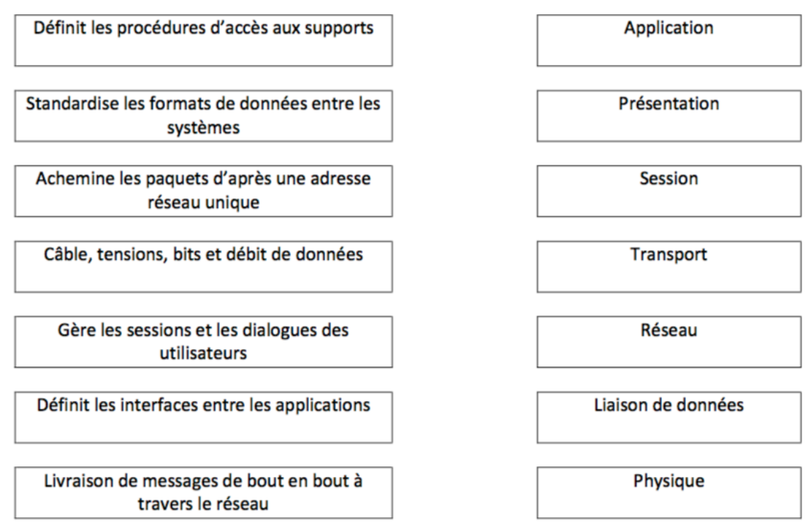
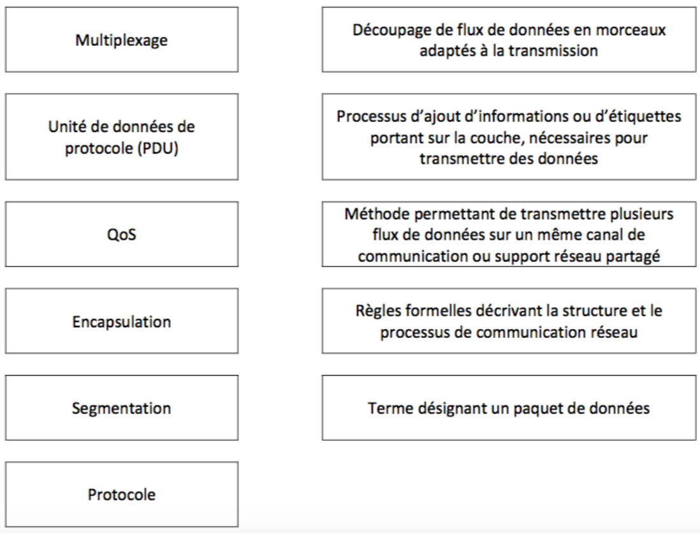

Exercice 1 : correspondance OSI et TCP/IP
| Couches du modèle OSI | Couche du modèle TCP/IP |
|---|
| 7 Application · 6 Présentation · 5 Session | Application |
| 4 Transport | Transport |
| 3 Réseau | Internet |
| 2 Liaison de données · 1 Physique | Accès réseau |
Exercice 2 : les 7 couches du modèle OSI
| N° | Nom | Fonction principale | Exemples de protocoles et composants | PDU |
|---|
| 7 | Application | Interface avec les applications de l'utilisateur | HTTP, FTP, SMTP, DNS, DHCP ; passerelles applicatives | Données |
| 6 | Présentation | Format des données : codage, compression, chiffrement | JPEG, ASCII, SSL/TLS | Données |
| 5 | Session | Ouvre, gère et ferme les dialogues entre applications | RPC, NetBIOS | Données |
| 4 | Transport | Livraison de bout en bout, segmentation, ports | TCP, UDP | Segment (TCP) / datagramme (UDP) |
| 3 | Réseau | Adressage logique et routage (meilleur chemin) | IP, ICMP, RIP, OSPF ; routeur | Paquet |
| 2 | Liaison de données | Trames, adressage physique (MAC), accès au support, détection d'erreurs | Ethernet, ARP ; switch, carte réseau | Trame |
| 1 | Physique | Transmission des bits sur le support (signaux, câbles, débit) | Câbles, fibre, Wi-Fi ; hub, répéteur | Bit |
Exercice 3 : concepts
1. Fonction → couche OSI

- Procédures d'accès aux supports → Liaison de données
- Standardise les formats de données → Présentation
- Achemine les paquets d'après une adresse réseau → Réseau
- Câble, tensions, bits et débit → Physique
- Gère les sessions et les dialogues → Session
- Interfaces entre les applications → Application
- Livraison de bout en bout → Transport
2. Terme → définition

- Segmentation → découpage du flux de données en morceaux adaptés à la transmission
- Encapsulation → ajout d'informations ou d'étiquettes propres à la couche
- Multiplexage → plusieurs flux sur un même canal ou support partagé
- Protocole → règles formelles décrivant la structure et le processus de communication
- PDU → terme désignant un paquet de données (l'unité de données d'une couche)
- QoS → pas de définition proposée. D'après le cours : capacité à transporter un type de trafic dans de bonnes conditions (débit, délai, pertes) en donnant des priorités.
Exercice 4 : QCM
1) Pourquoi a-t-on abandonné la commutation de circuits ? (3 réponses)
b, c, e. Pas de circuit de secours automatique en cas de panne (b) ; circuit ouvert même quand aucune donnée ne passe (c) ; beaucoup de circuits simultanés coûtent cher (e). a décrit la commutation de paquets ; d est faux : un circuit réservé garantit justement la qualité.
2) Pourquoi la commutation de paquets sans connexion pour Internet ? (3 réponses)
a, b, c. Elle s'adapte aux pannes, utilise efficacement l'infrastructure et les paquets peuvent prendre des chemins différents. d et e (ressources réservées, circuit établi avant l'envoi) décrivent la commutation de circuits.
3) Rôle de la QoS dans un réseau convergent
b. Elle établit les priorités de livraison des différents messages (classement du trafic, files d'attente).
4) Couche OSI de l'adressage IP
c : couche 3 (réseau).
5) Adressage de la couche 2
b : physique (adresse MAC). L'adressage logique (IP) est en couche 3.
7) Protocoles de la couche 4
b et e : TCP et UDP. IP est en couche 3 ; FTP et TFTP en couche application.
6) Étape suivante après le formatage de la page web et la création des segments TCP
d. Le serveur ajoute les adresses IP source et destination (en-tête IP → paquet). L'ordre de l'encapsulation est segment → paquet (IP) → trame (MAC) → bits. e vient après, c encore après ; a et b concernent le client.
Exercice 5 : débit d'une vidéo numérique
Méthode
Nombre de bits par pixel : il faut n bits avec 2n ≥ nombre de valeurs possibles. Puis Q = pixels × bits par pixel, et débit = Q × images par seconde.
1. Quantité d'information Q d'une image
32 intensités = 25 → 5 bits par pixel.
Pixels : 480 × 640 = 307 200.
Q = 307 200 × 5 = 1 536 000 bits (soit 192 000 octets).
2. Vitesse de transmission de l'émetteur
D = Q × 25 = 1 536 000 × 25 = 38 400 000 bit/s = 38,4 Mbit/s.
Exercice 6 : délais sur un Ethernet en bus
Données : débit D = 10 Mbit/s, longueur 800 m, vitesse v = 200 m/µs, trame de données 256 bits, acquittement 32 bits.
Méthode
Te = L / D ; Tp = distance / vitesse ; DA = Te + Tp. Astuce : 10 Mbit/s = 10 bits par µs, donc Te (en µs) = nombre de bits / 10.
Temps de propagation (le même pour les deux trames) :
Tp = 800 / 200 = 4 µs
Trame de données : Te = 256 / 107 = 25,6 µs
DA = 25,6 + 4 = 29,6 µs
Acquittement : Te = 32 / 107 = 3,2 µs
DA = 3,2 + 4 = 7,2 µs
À remarquerSur un réseau local, le temps de propagation (4 µs) est faible devant le temps d'émission d'une trame de données. Pour une petite trame comme l'acquittement, les deux deviennent comparables.